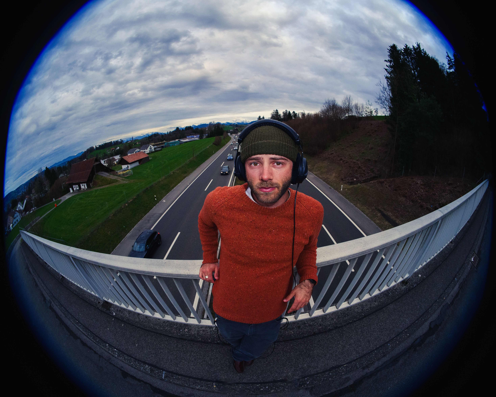

Verknotet
First Single off of upcoming album "Chloé" by Samuel Okkosch
Über die Single / About the Single
Deutsch
„Verknotet“ ist die erste Single aus dem kommenden Album „Chloé“ (28. Mai) – und erzählt genau davon: von Chloé. Und von mir. Und von uns. Von ihrer Lust auf Freiheit und meinem Wunsch nach Halt. Von kindlicher Neugier, die meine Welt bunter machte – und von der Distanz, die mich oft verunsichert zurückliess.
Musikalisch knüpft „Verknotet“ irgendwo zwischen Alex G und Wilco an – aber auf Deutsch. Mit charmanten Schweizerdeutsch-gefärbten Satzbrüchen und einer eigenen Handschrift, die sich nicht so leicht in Genres pressen lässt.
Als Vorbote des 14-Track-Albums Chloé gibt „Verknotet“ einen ersten Einblick in Samuel Okkoschs neue Klangwelt – verspielt, eigenwillig und nah.
English
"Verknotet" is the first single from the upcoming album Chloé (out May 28) – and it tells exactly that story: about Chloé. About me. About us. About her longing for freedom clashing with my need for stability. About a childlike curiosity that colored my world – and the distance that often left me feeling uncertain.
Musically, "Verknotet" sits somewhere between Alex G and Wilco – but in German. With charmingly Swiss-German-tinged phrasing and a distinct voice that doesn’t fit neatly into any genre box.
As the first glimpse into the 14-track album Chloé, "Verknotet" opens the door to Samuel Okkosch’s new sonic universe – playful, idiosyncratic, and deeply personal.
Über mich / about me
Deutsch
Samuel Okkosch verbringt seine Sommer in Horgen am Zürichsee, wo er in seinem Wohnzimmerstudio seine Musik selbst produziert, und seine Winter im Engadin als Skilehrer. Seine Musik ist ein farbenfrohes Mischmasch aus Alt-Country Klängen, Slacker-Rock-Gitarren, Wilco-inspiriertem Folk-Revival und sanften Indie-Melodien. Seine Texte - mal auf Englisch, Deutsch, Mundart oder Französisch - erzählen kindlich-verspielt aus seinem Leben, ohne die Vielschichtigkeit unserer skurrilen Existenz zu übersehen.
Nach vier Jahren Sendepause sprudelt 2025 endlich wieder Musik aus Samuels Wohnzimmer: Im Januar blickt ein Compilation-Album auf alte Demos zurück, im März taucht die EP "I Brush My Teeth Like I’m Losing a Fight" in seine amerikanischen Wurzeln ein, und im Mai erzählt sein Album „Chloé" in 14 Songs die persönliche Geschichte einer prägenden Bekanntschaft. Gemeinsam mit Freunden bringt Samuel seine spielerisch verzierten Songarrangements auf die Bühne - ehrlich und voller Energie.
English
Samuel Okkosch spends his summers in Horgen by Lake Zurich, where he produces his music in his living room studio, and his winters in the Engadin as a ski instructor. His music is a colorful mix of alt-country sounds, slacker-rock guitars, Wilco-inspired folk revival, and gentle indie melodies. His lyrics - whether in English, German, Swiss German, or French — tell playful, childlike stories from his life while never losing sight of the complexity of our peculiar existence.
After a four-year hiatus, Samuel's living room is finally brimming with music again in 2025: In January, a compilation album looks back on old demos; in March, the EP "I Brush My Teeth Like I’m Losing a Fight" explores his American roots; and in May, his album "Chloé" tells the personal story of a formative encounter through 14 songs. Together with friends, Samuel brings his playfully adorned song arrangements to the stage — honest and full of energy.